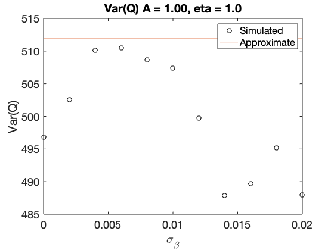
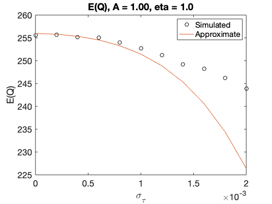
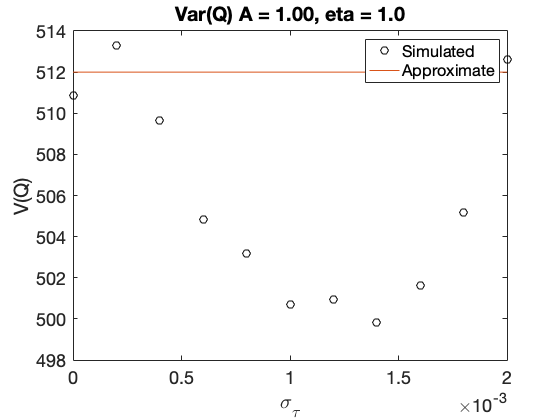
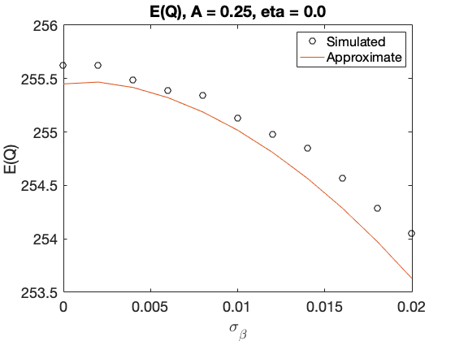
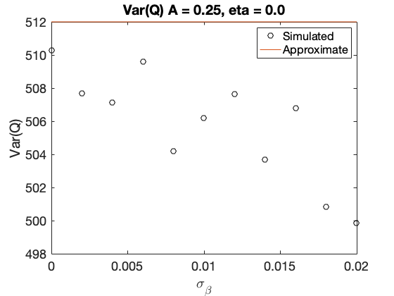
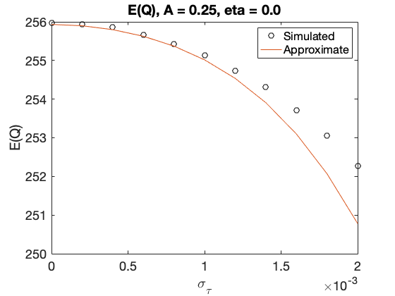
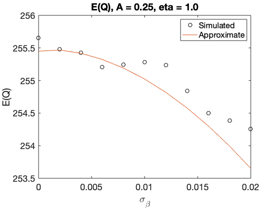
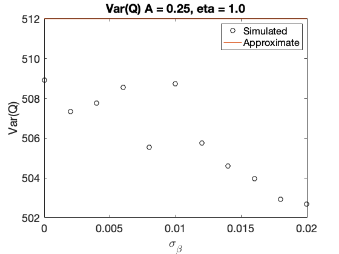
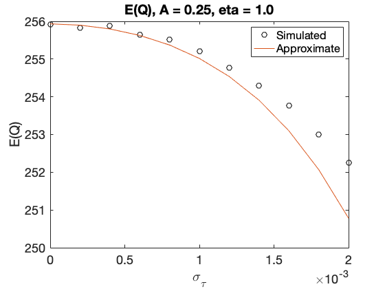
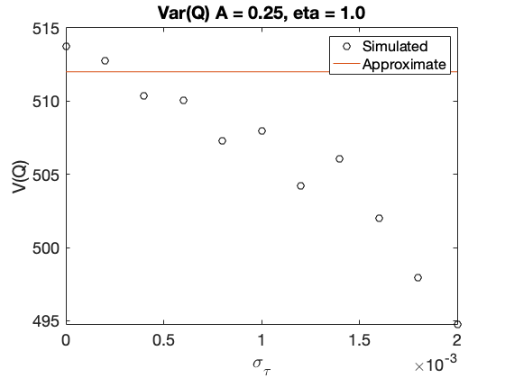

Compare approximate cost function distribution moments with simulation
tStart = tic;
N = 256;
T = 0.05;
t0 = 2.5;
[mu, t] = thzgen(N, T, t0, 'taur', 0.4);
f = fftfreq(N, T);
w = 2*pi*f;
tfun = @(theta,w) theta(1)*exp(1i*theta(2)*w*T);
D = tdtf(@(theta, w) -1i*w, 0, N, T);
Nmc = pow2(18);
rng('default')
A = [1, 0.25];
eta = [0, 1];
sigbeta = (0:2:20)*1e-3;
Nbeta = length(sigbeta);
EQbeta = zeros(Nbeta, 1);
VQbeta = zeros(Nbeta, 1);
EQbetaAppx = zeros(Nbeta, 1);
for m = 1:length(A)
for n = 1:length(eta)
A0 = A(m);
eta0 = eta(n);
theta0 = [A0;eta0];
Np = length(theta0);
h = tdtf(tfun, theta0, N, T);
g = eye(N)/h;
psi = h*mu;
for i = 1:Nbeta
sigma = [1e-4, sigbeta(i), 1e-3];
Qbeta = zeros(Nmc,1);
sigmu = noiseamp(sigma, mu, T);
sigpsi = noiseamp(sigma, psi, T);
Vmu = diag(sigmu.^2);
Vpsi = diag(sigpsi.^2);
W = h*Vmu*h' + Vpsi;
Wi = eye(N)/W;
parfor k = 1:Nmc
xbeta = mu + sigmu.*randn(N, 1);
ybeta = psi + sigpsi.*randn(N, 1);
Vxbeta = diag(noisevar(sigma, xbeta, T));
Vybeta = diag(noisevar(sigma, ybeta, T));
Qbeta(k) = (h*xbeta - ybeta)'*(eye(N)...
/(h*Vxbeta*h' + Vybeta))...
*(h*xbeta - ybeta);
end
EQbeta(i) = mean(Qbeta);
VQbeta(i) = var(Qbeta);
EQbetaAppx(i) = N - sigma(2)^2*(...
N + 2*trace((h'*Wi*h*Vmu).^2 + (Wi*Vpsi).^2)) ...
- sigma(3)^2*trace(Wi.*(D*Vpsi*D') ...
+ (h'*Wi*h).*(D*Vmu*D') + 2*(h'*Wi*h*Vmu*D').^2 ...
+ 2*(Wi*Vpsi*D').^2);
end
figure('Name','Expectation versus sigma_beta')
plot(sigbeta, EQbeta, 'ko', sigbeta, EQbetaAppx, '-')
legend('Simulated','Approximate')
xlabel('\sigma_\beta')
ylabel('E(Q)')
title(sprintf('E(Q), A = %.2f, eta = %.1f',A0,eta0))
figure('Name','Variance versus sigma_beta')
plot(sigbeta, VQbeta, 'ko', sigbeta, 2*N*ones(size(sigbeta)), '-')
legend('Simulated','Approximate')
xlabel('\sigma_\beta')
ylabel('Var(Q)')
title(sprintf('Var(Q) A = %.2f, eta = %.1f',A0,eta0))
sigtau = (0:2:20)*1e-4;
Ntau = length(sigtau);
EQtau = zeros(Ntau, 1);
VQtau = zeros(Ntau, 1);
EQtauAppx = zeros(Ntau, 1);
for i = 1:Ntau
sigma = [1e-4, 1e-2, sigtau(i)];
Qtau = zeros(Nmc,1);
sigmu = noiseamp(sigma, mu, T);
sigpsi = noiseamp(sigma, psi, T);
Vmu = diag(sigmu.^2);
Vpsi = diag(sigpsi.^2);
W = h*Vmu*h' + Vpsi;
Wi = eye(N)/W;
parfor k = 1:Nmc
xtau = mu + sigmu.*randn(N, 1);
ytau = psi + sigpsi.*randn(N, 1);
Vxtau = diag(noisevar(sigma, xtau, T));
Vytau = diag(noisevar(sigma, ytau, T));
Qtau(k) = (h*xtau - ytau)'...
*(eye(N)/(h*Vxtau*h' + Vytau))...
*(h*xtau - ytau);
end
EQtau(i) = mean(Qtau);
VQtau(i) = var(Qtau);
EQtauAppx(i) = N - sigma(2)^2*(...
N + 2*trace((h'*Wi*h*Vmu).^2 + (Wi*Vpsi).^2)) ...
- sigma(3)^2*trace(Wi.*(D*Vpsi*D') ...
+ (h'*Wi*h).*(D*Vmu*D') + 2*(h'*Wi*h*Vmu*D').^2 ...
+ 2*(Wi*Vpsi*D').^2);
end
figure('Name','Expectation versus sigma_tau')
plot(sigtau, EQtau, 'ko', sigtau, EQtauAppx, '-')
legend('Simulated','Approximate')
xlabel('\sigma_\tau')
ylabel('E(Q)')
title(sprintf('E(Q), A = %.2f, eta = %.1f',A0,eta0))
figure('Name','Variance versus sigma_tau')
plot(sigtau, VQtau, 'ko', sigtau, 2*N*ones(size(sigtau)), '-')
legend('Simulated','Approximate')
xlabel('\sigma_\tau')
ylabel('V(Q)')
title(sprintf('Var(Q) A = %.2f, eta = %.1f',A0,eta0))
fprintf("Finished loop: %d, %d\n", m, n)
toc(tStart)
end
end
Finished loop: 1, 1
Elapsed time is 4254.644922 seconds.
Finished loop: 1, 2
Elapsed time is 12731.425372 seconds.
Finished loop: 2, 1
Elapsed time is 18369.995060 seconds.
Finished loop: 2, 2
Elapsed time is 24965.892059 seconds.


     

   